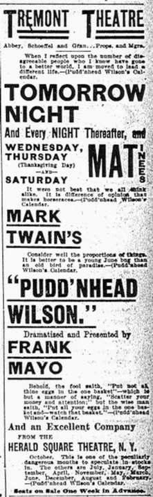

){kind=link}

At Boston's Tremont TheaterMayo's production was in Boston during Thanksgiving week, 1895. It was announced on Sunday, November 23, in brief notices that focused on the story of Pudd'nhead himself:  Henry A. Clapp reviewed the play for the Daily Advertiser (which managed to refer to Mayo as "Mrs. Frank Mayo" in its headline). He locates the story in the context of slavery and the old South, and is the only critic I've found who is uncomfortable with Mayo's comic interpretation of Pudd'nhead: The Globe review was unsigned. The critic expressed the usual misgivings about dramatizing a novel, but is generally favorable. The review includes a few plot details not mentioned elsewhere, and treats the play as a melodrama which is "for the most part a comedy": After their week in Boston Mayo and company moved on to another stage, but the January, 1896, issue of The Bostonian magazine included a review by Atherton Brownell. As the lead article in his "Rambles in Stageland" department, he discussed the play in the context of national drama. I've omitted about a third of the article, as it doesn't deal at all with Pudd'nhead Wilson. Unlike most critics, Brownell was unhappy with Eleanor Moretti's interpretation of Roxy; while others seem to have enjoyed her use of broadly, probably stereotypically African American mannerisms and dialect, he apparently felt such behavior was inappropriate in someone who looked so "white": |